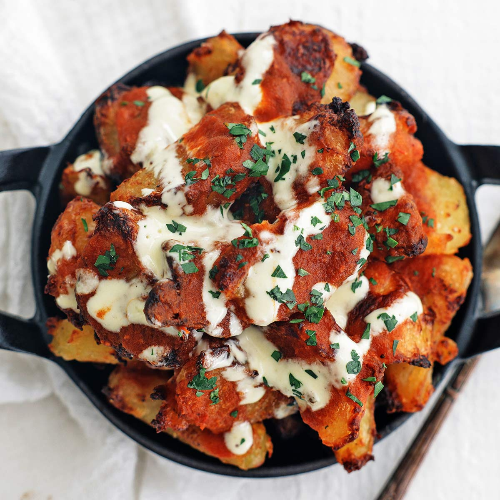
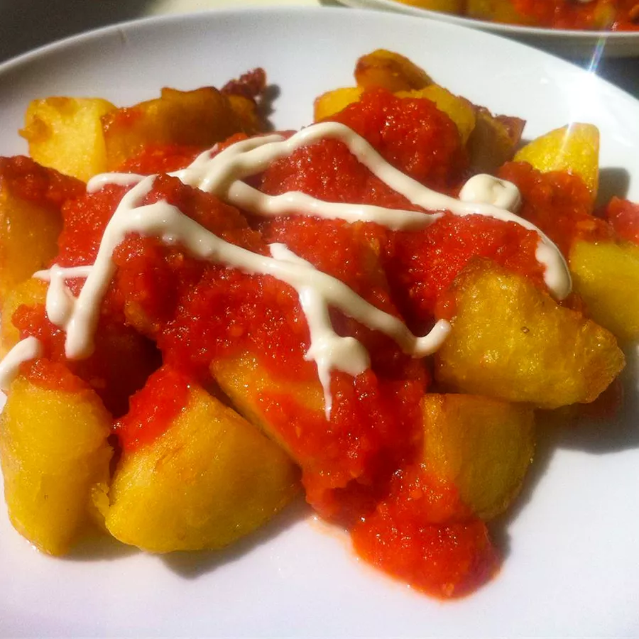

Combine potatoes, 2 cups olive oil, and 3 teaspoons salt in a large cold skillet. Heat on low and cook until potatoes are softened, 12 to 15 minutes. Increase heat to high and fry until golden, 5 to 6 minutes. Drain on paper towels.
Heat 3 tablespoons olive oil in a large saucepan over medium heat. Cook and stir onion with 1 teaspoon salt in the hot oil until onion has softened, 3 to 4 minutes. Add garlic, chile, and smoked paprika; simmer for 1 to 2 minutes. Stir in tomatoes and return to a simmer. Transfer tomato mixture to a blender, cover, and puree until tomato sauce is smooth.
Serve patatas bravas with tomato puree and and mayonnaise for dipping.
